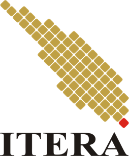

Kuliah Praktik dan Tugas Kelompok
Sebagian besar mata kuliah di Teknik Informatika ITERA punya komponen praktik, jadi mahasiswa tidak cuma dengar teori tapi juga langsung coba bikin project kecil, baik individu maupun kelompok.

Institut Teknologi Sumatera
Institut Teknologi Sumatera (ITERA) resmi berdiri sejak 6 Oktober 2014 sebagai perguruan tinggi negeri baru yang berlokasi di Jalan Terusan Ryacudu, Way Hui, Kecamatan Jati Agung, Kabupaten Lampung Selatan. Kampus ini dibangun sebagai bagian dari upaya pemerataan akses pendidikan tinggi di luar Pulau Jawa, dengan fokus utama pada bidang sains dan teknologi.
ITERA dikenal juga dengan slogan "Smart, Friendly, and Forest Campus", karena area kampusnya yang cukup luas (sekitar 285 hektare) dan masih banyak menyisakan ruang hijau. Meski usianya belum genap 12 tahun, ITERA terus berkembang, baik dari sisi jumlah program studi, jumlah mahasiswa, maupun capaian riset dosennya.
Salah satu kabar terbaru yang cukup membanggakan, per 16 September 2026 ITERA berhasil meraih peringkat dua nasional sebagai perguruan tinggi paling berkelanjutan versi salah satu pemeringkatan kampus hijau. Prestasi ini menambah daftar pengakuan atas komitmen ITERA dalam pengelolaan lingkungan kampus.
ITERA memiliki tiga fakultas dengan puluhan program studi jenjang sarjana. Berikut sebagian program studi di masing-masing fakultas:
| Fakultas | Contoh Program Studi |
|---|---|
| Fakultas Sains | Fisika, Matematika, Biologi, Kimia, Farmasi, Sains Data |
| Fakultas Teknologi Infrastruktur dan Kewilayahan | Teknik Sipil, Arsitektur, Teknik Geomatika, Perencanaan Wilayah dan Kota, Teknik Lingkungan |
| Fakultas Teknologi Industri | Teknik Informatika, Teknik Elektro, Teknik Mesin, Teknik Industri, Teknik Kimia |
Catatan: tabel di atas hanya menampilkan sebagian contoh dari masing-masing fakultas, bukan daftar lengkap seluruh program studi ITERA.
Sebagian besar mata kuliah di Teknik Informatika ITERA punya komponen praktik, jadi mahasiswa tidak cuma dengar teori tapi juga langsung coba bikin project kecil, baik individu maupun kelompok.
Selain akademik, kampus juga punya banyak unit kegiatan mahasiswa (UKM) dan himpunan jurusan yang aktif mengadakan acara, mulai dari seminar, lomba, sampai kegiatan sosial ke masyarakat sekitar.